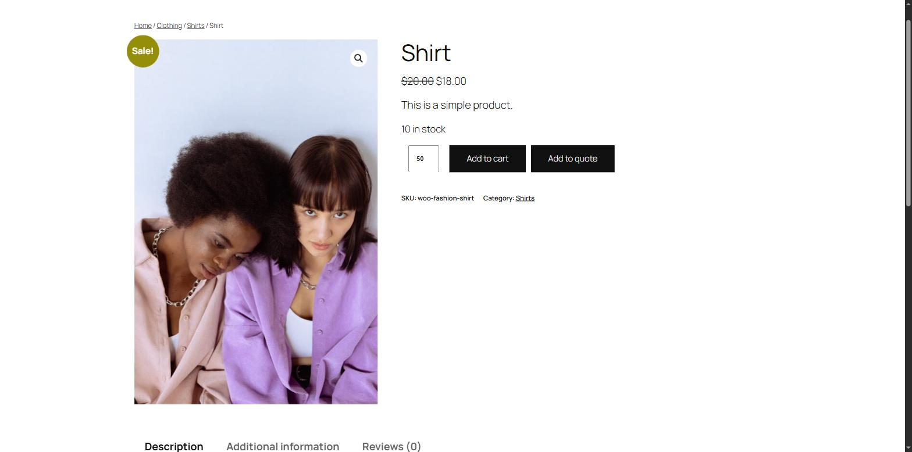
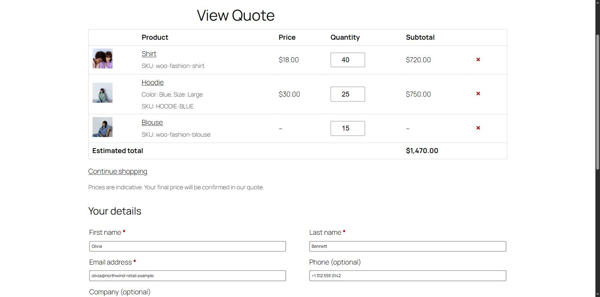

Getting started
Install the plugin, check three settings and send yourself a test request — about five minutes.
Install
Make sure WooCommerce 8.0 or newer is installed and active first. Then:
- In your WordPress dashboard go to Plugins › Add New Plugin.
- Search for BrainlessITC Request Product Quote.
- Click Install Now, then Activate.
Prefer a manual install? Download the zip from the WordPress.org plugin page and upload it in Plugins › Add New Plugin › Upload Plugin.
After activation
- A new Quotes menu appears in your dashboard with All Quotes, Settings and Add-Ons.
- A page called View Quote (
/view-quote/) is created for you. It contains the Request a Quote block, which shows the customer's quote list and the request form. - "Add to quote" buttons are switched on for all products, on product pages and in product lists.
- You may see a screen asking whether you'd like to share non-sensitive usage data to help improve the plugin. It is optional — Skip works just as well. See What data is shared?
Prices and Add to cart stay visible by default. Quotes work next to normal purchases until you turn on catalog mode.
Five-minute setup
1. Check the quote page
Go to Quotes › Settings › General. Quote page should show View Quote. If you prefer your own page, add the Request a Quote block (or the [blraq_quote] shortcode) to it and select it here.
2. Choose where buttons appear
In Quotes › Settings › Products & Buttons:
- Enable quotes for — all products, or only products you enable one by one.
- Product pages and Shop & category pages — where the button is shown.
- Catalog mode — hide prices (optionally with text such as "Price on request") and/or hide Add to cart.

3. Give customers a way back to their list
Add the Quote List Link block to your header (Appearance › Editor › Header) or menu. It links to the quote page and shows how many products are in the list. On classic themes use the shortcode:
[blraq_quote_link label="Quote" show_count="yes"]4. Review the emails
Open WooCommerce › Settings › Emails. You'll find New quote request (to you), Quote request received and Quote reply (to the customer). Edit the subject, heading and text, and use WooCommerce's preview to see the result.
What customers see

After clicking Add to quote, a short message with a View quote link appears under the button. (You can send customers straight to the quote page instead: General › After adding a product.)

After sending, the customer sees your confirmation message with the quote number and the requested products, and receives a confirmation email.
Send a test request
- Open your shop in a private / incognito window (so you're a guest).
- Add one or two products to the quote and open View Quote.
- Fill in the form with an email address you can check and send it.
- Back in the dashboard, open Quotes › All Quotes — your request is there with the status New.
The plugin sends emails through WooCommerce and WordPress. If none of your store emails arrive, configure an SMTP plugin for your site — the quote is saved in the dashboard either way.
Next steps
- Settings — every option explained.
- Managing quotes — statuses, notes and replying to customers.
- Pro add-on — send priced proposals customers can accept and pay online.